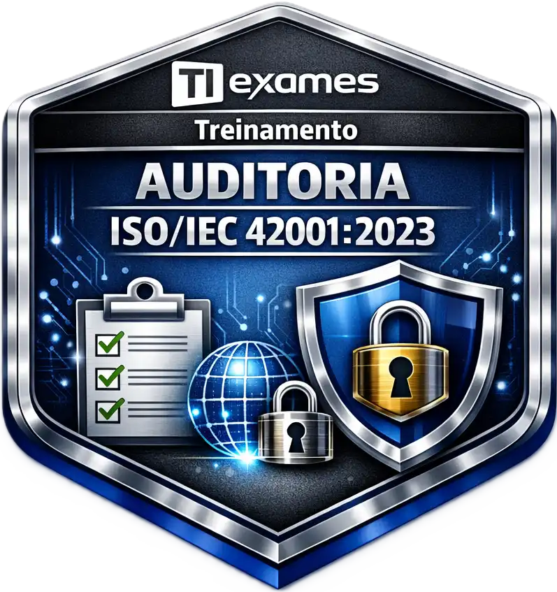

Sobre mim

Sou profissional de tecnologia com 20 anos de experiência em ambientes corporativos, atuando na melhoria contínua, Segurança da Informação, governança de TI e automação de processos. Minha atuação conecta operações, risco e negócios para gerar resultados sustentáveis.
Sou formado em Segurança da Informação e certificado como Data Protection Officer (EXIN), com especialização em LGPD e ISO/IEC 27001. Apoio organizações na proteção de dados, gestão de riscos e conformidade, fortalecendo a continuidade e a resiliência operacional.
Minha jornada é orientada por inovação contínua e atualização constante em novas tecnologias. Evolui de automações no Power Automate para o domínio prático de Inteligência Artificial e hoje, projeto agentes de IA e orquestrações no N8N para criar fluxos inteligentes e autônomos que reduzem tempo de atendimento e ampliam a eficiência. Esse caminho reflete meu compromisso em manter-me sempre um passo à frente das mudanças do mercado.
Profissional de TI com 20 anos de experiência em ambientes corporativos, atuando na melhoria contínua, Segurança da Informação, governança de TI e automação de processos.
Formado em Segurança da Informação e certificado DPO (EXIN), com foco em LGPD e ISO/IEC 27001.
Compromisso com inovação contínua: da automação com Power Automate à IA e agentes no N8N, aplicando soluções inteligentes buscando eficiência e conformidade.
Desenvolvimento Profissional & Especializações

Iniciando a Auditoria na ISO/IEC 42001:2023 - Sistema de Gestão de IA
Ver PDFHabilidades Interpessoais
Inteligência Emocional
Autogestão emocional e empatia aplicadas à liderança e tomada de decisão.
ValidarLiderança e Mentoria
Experiência na condução, desenvolvimento e capacitação de equipes, com foco em autonomia, performance e alinhamento aos objetivos do negócio.
ValidarComunicação Estratégica
Capacidade de traduzir temas técnicos complexos (LGPD, segurança e IA) para linguagem clara, objetiva e orientada à tomada de decisão.
ValidarGestão de Perfis Comportamentais
Habilidade para compreender diferentes estilos comportamentais, adaptar a comunicação e fortalecer o trabalho em equipe.
ValidarGestão de Tempo e Prioridades
Organização, priorização e foco em entregas de alto impacto, especialmente em ambientes com SLAs, incidentes e múltiplas demandas.
ValidarAprendizado Contínuo e Produtividade
Aplicação de técnicas de estudo, retenção de conhecimento e produtividade para evolução constante em tecnologia, segurança e inteligência artificial.
ValidarFeedback Construtivo
Prática de feedback claro, respeitoso e orientado à melhoria contínua, fortalecendo relações profissionais e desempenho individual.
ValidarEmpoderamento e Delegação Estratégica
Delegação consciente, desenvolvimento de autonomia e fortalecimento do time para ganho de eficiência e maturidade organizacional.
Validar